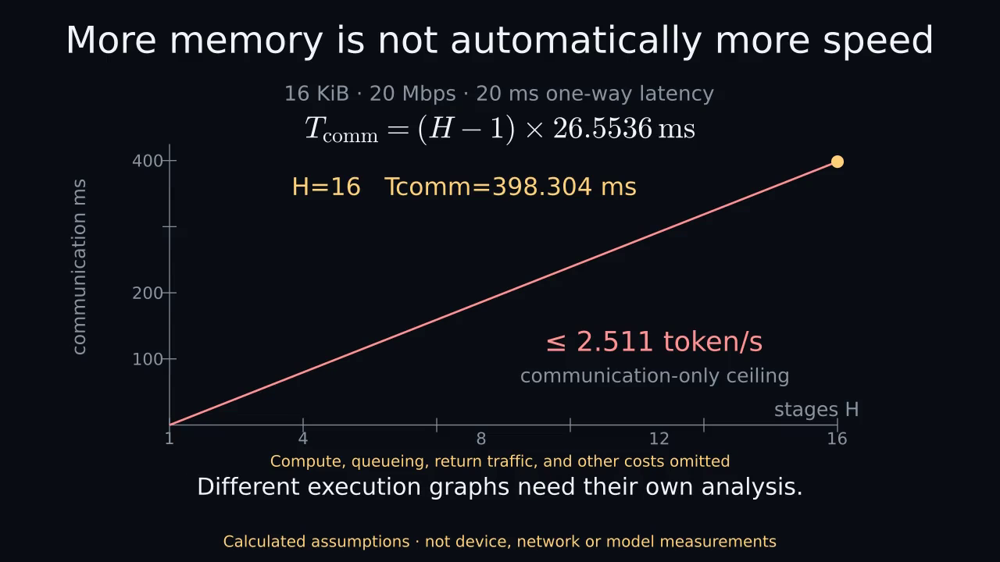

More memory is not automatically more speed
58.8-second narrated Manim illustration. Synthetic stock voice. CALCULATED ASSUMPTIONS · NOT DEVICE OR MODEL MEASUREMENTS.
Static by default. Choose playback only if you want motion and sound. Captions use approximate sentence timing.

Download narrated MP4 · Complete text and visual explanation · Captions · Original silent version
Text and visual explanation
More memory is not automatically more speed
Narrated Manim concept video. 58.767 seconds.
Synthetic stock voice: Kokoro am_michael.
Sentence captions are approximate, not word-aligned.
CALCULATED ASSUMPTIONS · NOT DEVICE OR MODEL MEASUREMENTS
0.000–15.967 seconds
Spoken: Pooling memory can make a larger model seem possible. Here, ideal four-bit weights take about thirty-three gibibytes. Add our assumed overhead, cache, and workspace, and the total rises to about forty-four.
Visual explanation: 70 billion parameters times 4 bits divided by 8 is 35 billion bytes: 35.00 GB or 32.596 GiB. The illustrative envelope adds 20 percent weight overhead, 2.5 GiB FP16 KV cache and 2 GiB workspace, totaling 43.616 GiB. KV dimensions are 80 layers, 8 KV heads, head dimension 128, context 8192 and batch one.
15.967–27.900 seconds
Spoken: At twelve usable gibibytes per pool, that means at least four pools in aggregate. But adding their capacities doesn't prove the model can actually be placed across them.
Visual explanation: The ceiling of required bytes divided by assumed allocatable bytes gives an aggregate lower bound, not a placement guarantee. The pools must be simultaneously allocatable after reservations; no real free-memory measurements are used. Pool count does not automatically equal stage count.
27.900–44.533 seconds
Spoken: Speed needs a separate calculation. In this one-token serial example, every stage depends on the previous one. With the stated link assumptions, sixteen stages spend about four tenths of a second on communication alone.
Visual explanation: For one 16-KiB boundary over hypothetical 20-Mbps payload bandwidth with 20-ms one-way latency, the transfer time is 20 ms plus 16384 divided by 2500000 seconds, or 26.5536 ms. Four sequential stages require three such crossings, totaling 79.6608 ms of communication alone. The animated marker illustrates dependencies, not real-time measured packet motion. For the declared one-token serial decoding graph with H sequential stages, Tcomm=(H-1)*(latency+payload/byte_rate). At four stages it is 0.0796608 seconds; the communication-only ceiling is 12.553 tokens per second. At sixteen stages it is 0.398304 seconds; the ceiling is 2.511 tokens per second. These exclude compute, queueing, protocol, return traffic, relay, contention and failures. Overlap across independent requests can alter throughput; it does not remove the dependency in this declared one-token serial graph. Speculative or multi-token decoding and different orchestration graphs need a different analysis; this is not a universal lower bound on all distributed inference. Bounds apply only to the declared one-token serial decoding graph. Speculative or multi-token decoding and different orchestration graphs require separate analysis. Omitted return traffic makes the communication-only ceiling optimistic.
44.533–58.767 seconds
Spoken: That gives an optimistic communication-only ceiling of about two and a half tokens per second. These are assumptions, not household measurements, and other execution graphs need separate analysis.